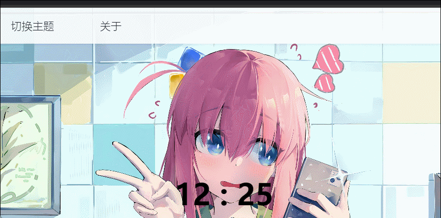

Magimu Nav. 作业报告
网站的基本介绍
网站概览
网站细节 & 特效说明
-
背景图动态轮播，切换图片时淡入淡出。不同主题背景图不同。
注意：背景图的切换时间为15s, 各个主题的背景图各有4张， 虽然我们采用了预加载技术与CDN加速（参见技术文档），但是在网络较差时， 该功能的体验并不好，建议加载出网页logo后进行操作。
 背景图动态轮播
背景图动态轮播
- 网站中心的实时时间可以随时让您观察时间（参见下图)
- 顶部导航栏有多种动态特效，字体颜色浅化，由中间向两边移动的指示， 索引更是有上下跳动效果。二级导航也带有颜色变化和字体放大等效果。（参见下图)
-
本网站采用深色与浅色双主题形式，浏览者可以根据自己的喜好自行切换相应主题，
切换时有过渡效果。并且网站会记住用户机的主题设置。
 主题、时间与导航栏
-
侧导航栏给你更快捷更方便的操作体验，侧边栏一般情况下为隐藏状态，用户只需要移到页面左侧即可自动展开.
注意：侧边栏仅在主页可用。
 侧边栏
侧边栏
-
搜索框采用毛玻璃效果，点击后对背景图进行放缩与模糊处理，底部随机淡入淡出出现一段富有意义的话。
 搜索框
搜索框
-
移动端的适配非常自然完美，在移动端所有组件与页面都做了适配，侧边栏也自然的变为了导航栏展开的菜单。
 Magimu 移动端
Magimu 移动端
-
“关于”框采用 Modal 效果，并在其中嵌入了数个子页面，子页面切换淡入淡出自然，
对应的tab也会随之变化，Modal的backdrop也用到了毛玻璃特效.
注意：“关于”只在PC端可见，关于 Modal特效的说明参见下页技术文档。
 Magimu 深色模式
Magimu 深色模式
- 我们对滚动条样式进行了修改，具体效果就在本网页体现。
- 主页采用标签页式设计， 主页实际上包括了数个子页面。 具体效果与Modal切换标签基本一致，详情参见网站主页。
技术文档
概述
为方便开发，本网站采用了多种第三方库/框架，包括:
- Bootstrap 5
- Cover.css
- jQuery
- jQuery.Cookie
- prism.js
Js 与 jQuery 的应用
我们把所有有关组件的javascript 函数与全局变量代码置于components.js 内方便其它页面调取，在每张页面加载时， 我们都会调用 setTheme 以确保每一张页面的主题一致。
jQuery的应用主要体现在对DOM的控制中，例如搜索框。 注意：我们为了确保点击除搜索框之外可以退出搜索状态，也对DOM的事件进行了控制。
$("#search-bar").click(function (event) {
if (mScreenWidth.matches) {
$("#home-timer").css("display", "none");
}
$(".home-searchbar").css("width", "500px");
$(".daily-words").fadeIn(2000)
.text(dailyWords[Math.round(Math.random() * dailyWords.length)]);
$(".tip-words").fadeOut("slow");
$(".bgbox").css({
"transform": "scale(1.1)",
"filter": "blur(20px)"
});
event.stopPropagation();
}).on("keypress", function (event) {
if (event.keyCode === 13) {
let url = "https://cn.bing.com/search?q=";
url += $("#search-bar").val();
window.open(url, "_blank");
$("#search-bar").val("");
}
});
我们大量使用了jQuery 内置特效，例如 fadeOut 与 show/hide，我们使用了一个较为恰当的时间以控制特效效果
我们使用了简单的多线程js 代码，调用了 setTimeout, setInterval控制一些效果的体现。 例如，提示框会在页面打开后3s后弹出，背景图15s更换一次等效果。
function updateTimer() {
$("#home-timer").text(timer());
}
setInterval(updateTimer, 10000);
考虑到主页图像较多，我们也应用了 图像预加载技术：
function preloadBackground() {
/* preload background */
let images = [];
function preload() {
for (let i = 0; i < preload.arguments.length; i++) {
images[i] = new Image();
images[i].src = preload.arguments[i];
console.log(`image ${preload.arguments[i]} loaded`);
}
}
preload(
"../images/backgrounds/Light/background1.jpg",
"../images/backgrounds/Light/background2.jpg",
"../images/backgrounds/Light/background3.jpg",
"../images/backgrounds/Light/background4.jpg",
"../images/backgrounds/Dark/background1.jpg",
"../images/backgrounds/Dark/background2.jpg",
"../images/backgrounds/Dark/background3.jpg",
"../images/backgrounds/Dark/background4.jpg",
"../images/backgrounds/Login/LoginBackground.jpg"
/* ... */
);
}
可以验证，加载速度的确有所加快。
我们注意到在移动端下我们需要js 特殊处理，我们使用了 js的媒体查询解决了这个问题：
/* According media screen to change some style */
const mScreenWidth = window.matchMedia('(max-width: 768px)');
如本页面所示我们使用了 prism.js 高亮渲染代码 ：
console.log("Hello, World!!\n");
Bootstrap 与其自适应系统
我们使用了 Bootstrap 作为我们的首选框架， 得益于Bootstrap 的灵活的 自适应系统 ，我们很好的实现了移动端的适配
我们通过 scss 与 Bootstrap 提供的API 完成了 Bootstrap 的客制化
$primary: #ff5568;
$font-family-monospace: "Fira-Code";
$btn-font-family: "sans-serif";
$navbar-light-color: #000000;
$nav-link-font-weight: 300;
$dropdown-box-shadow: 0 0.5rem 1rem rgba(0, 0, 0, 0.15);
$dropdown-dark-box-shadow: 0 0.5rem 1rem rgba(0, 0, 0, 0.15);
$nav-link-font-size: 1.1rem;
$navbar-dark-color: #ffffff;
我们也没有过于依赖第三方库的效果，实际上， 例如“关于”框我们就没有使用 Bootstrap 的 modal 组件，而是自行编写令我们满意的效果
.himu-modal {
z-index: 10000;
-webkit-backdrop-filter: blur(10px) saturate(1.5);
backdrop-filter: blur(10px) saturate(1.5);
position: fixed;
top: 0;
left: 0;
right: 0;
bottom: 0;
background-color: rgba(0, 0, 0, 0.5);
display: none;
}
Cookie 的应用
我们借助了jQuery.Cookie 实现了“记住主题”的效果，在跳转页面 (Jump.html) 内我们巧妙使用了Cookie传递了页面的参数完成了一个页面不同跳转链接的效果。
function jumpToExternSite(siteName) {
$.cookie("extern_site", siteName, {path: '/'});
window.location.href = 'pages/jump.html';
}
域名与CDN加速
本网站发布于github pages，但在myblog.himu.live 可用。 我们在myblog.himu.live上启用了Cloudflare CDN加速，在访问出现问题时， 我们建议访问 myblog.himu.live 而非 github pages